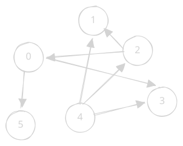

-
Consider the directed graph $G$ shown in the figure below.

a. State a topological ordering of $G$. Then state and justify the number of distinct topological orderings of $G$.
b. State a single directed edge that could be added to $G$ to construct a simple graph with no topological ordering. Then state and justify the number of distinct single edges that could be added to $G$ to construct a simple graph with no topological ordering.
-
We are given an undirected graph $G=(V,E)$ with positive integer edge weights. Every node has degree at most 5, has given $x$ and $y$ coordinates, and is coloured red or blue. You start on a red node labelled $s$ and want to find a shortest path to any blue node. You may traverse an edge from $a$ to $b$ only if $d(s,a)<d(s,b)$, where $d$ denotes Euclidean distance between the given coordinates. Design an $O(|V|)$ algorithm to solve this problem.
Hint
The exact formula for Euclidean distance is not important here. Think about how the distance constraint restricts the direction in which you may traverse each edge. Could the permitted directions form a cycle?
-
Prove that there are $\mathsf{RE}$ languages that are not decidable.
Hint
Use a diagonalisation argument.
Problem Set 4
Posted
Due